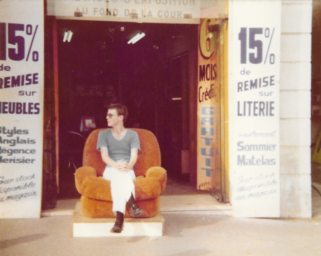
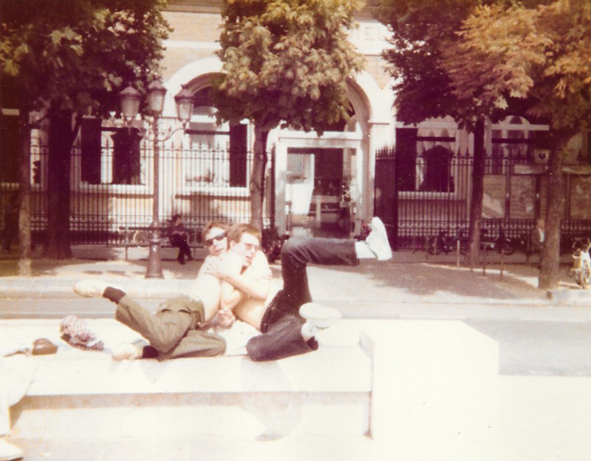
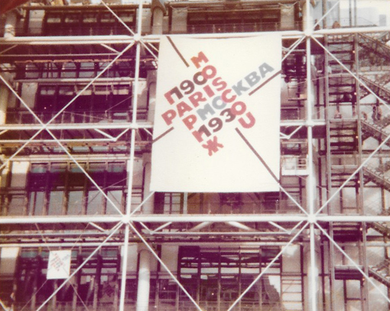
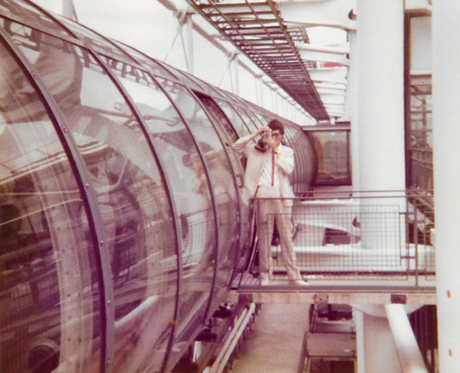
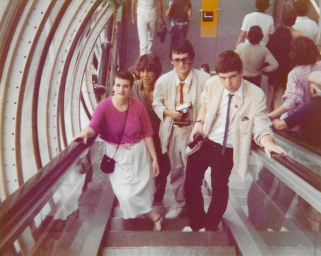
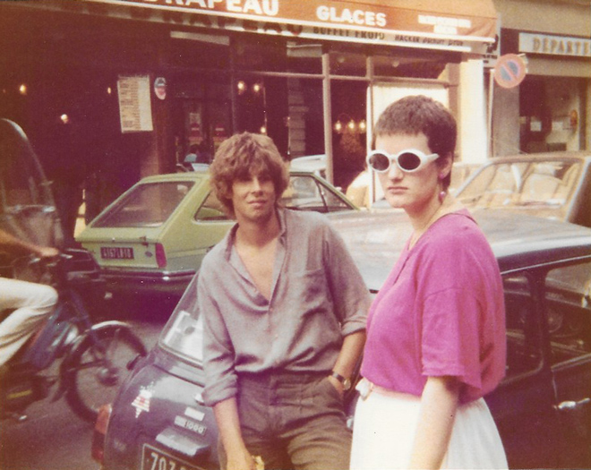

Paris - August 1979

In August, I returned to Paris when a group of us drove a mini-bus to Italy. Our first stop of this 'epic trip' was Paris. I found a furniture store which had a chair which was just crying out for someone to sit on it ...
Then Pepin and I pretended to be classical sculptures on the benches outside Notre-Dame Cathedral. It seemed funny at the time. Less so now.


The major reason for our stop in Paris was to visit the Paris / Moscow 1900-1930 exhibition at the Pompidou Centre.

Also on the trip was my room-mate, Guy who was an architecture student (hence his effortless style), Pepin and Penny (co-students on my History of Art course) and Tom who was then going out with Pepin's sister, Emma.

